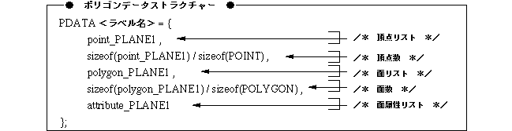

Return to previous page | Return to menu | Go to next page
void
Graphic function
Drawing a polygon model
void slPutPolygon(pat)
PDATA *pat ;
pat: Start address of the area where polygon data is stored
Draws the polygon model specified as a parameter.
The polygon model is drawn on the screen using perspective transformation, depending on the translation and rotation components of the current matrix.
None
Polygon data is defined as a PDATA structure.
The PDATA structure contains polygon vertex list, vertex count, face list, face count, and face attribute information.
For details, refer to “Structure Reference: PDATA Structure” and “Chapter 2: Drawing” in Programmer's Tutorial.
Reference: Chapter 2 Drawing
slPutPolygon

Note) The PDATA structure is defined in “sl_def.h”.